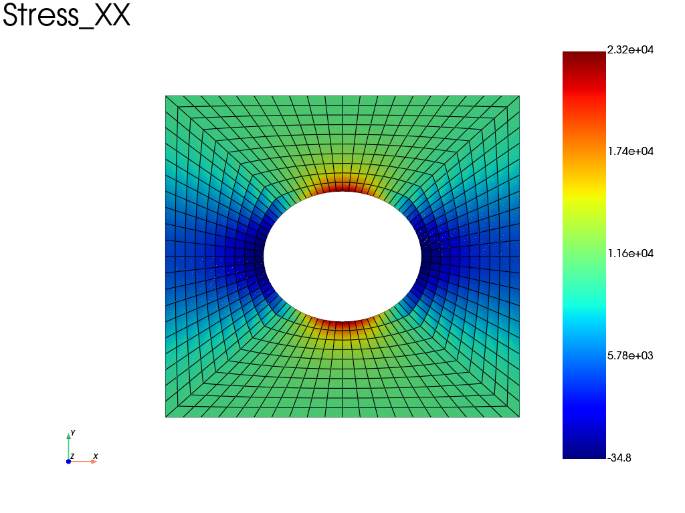

Note
Go to the end to download the full example code.
Periodic BC without node pinning: mean displacement constraint
Periodic boundary conditions only constrain the difference of displacement between opposite faces: the rigid body translation remains free and must be removed. The usual way is to block the displacement of an arbitrary node (generally the node nearest to the center of the RVE).
This example shows an alternative that avoids choosing a specific node:
the mean displacement over all the nodes is constrained to zero with
Lagrange multipliers (one per displacement component), using
fedoo.constraint.MeanValueConstraint. The solution is then
independent of any node choice, and the reaction is distributed over all
the nodes instead of being concentrated on the pinned node.
import numpy as np
import fedoo as fd
Geometry and material
fd.ModelingSpace("2Dstress")
mesh = fd.mesh.hole_plate_mesh(nr=11, nt=11, length=100, height=100, radius=20)
material = fd.constitutivelaw.ElasticIsotrop(1e5, 0.3)
wf = fd.weakform.StressEquilibrium(material)
assemb = fd.Assembly.create(wf, mesh)
Problem: solid assembly + mean displacement constraint
The MeanValueConstraint is an assembly object summed with the solid assembly. It enforces \(\sum_i w_i u_d^{(i)} = 0\) for each displacement component \(d\), with one Lagrange multiplier per component (saddle-point system: a direct solver is required).
constraint = fd.constraint.MeanValueConstraint(mesh, "Disp")
pb = fd.problem.Linear(assemb + constraint)
Boundary conditions: periodicity + macroscopic strain
E = [0.1, 0, 0] # macroscopic strain tensor [EXX, EYY, EXY]
pb.bc.add(fd.constraint.PeriodicBC(periodicity_type="small_strain"))
# No node pinning needed: the rigid body translation is removed by the
# mean displacement constraint.
pb.bc.add("Dirichlet", "MeanStrain", E) # apply specified macro strain
List of boundary conditions:
number of bc = 3
0: Dirichlet -> 'E_xx' for 1 nodes set to 0.1
1: Dirichlet -> 'E_yy' for 1 nodes set to 0
2: Dirichlet -> 'E_xy' for 1 nodes set to 0
Solve and post-treatment
pb.solve()
volume = mesh.bounding_box.volume
mean_stress = pb.get_ext_forces("MeanStrain") / volume
print("Mean stress, Voigt vector ([Sxx, Syy, Sxy]): ", mean_stress)
# The mean displacement is zero (this is the enforced constraint):
disp = pb.get_disp()
print("Mean displacement: ", disp.mean(axis=1))
assert np.allclose(disp.mean(axis=1), 0, atol=1e-10)
# The Lagrange multipliers are close to zero (no resultant force is needed
# to maintain the constraint on a self-equilibrated periodic solution):
print(
"Lagrange multipliers: ",
[pb.get_dof_solution(name)[0] for name in ("MeanValue_DispX", "MeanValue_DispY")],
)
pb.get_results(assemb, ["Stress", "Disp"]).plot("Stress", "XX")

Mean stress, Voigt vector ([Sxx, Syy, Sxy]): [[ 7.888e+03]
[ 2.253e+03]
[-5.781e-12]]
Mean displacement: [ 0.000e+00 -1.615e-17]
Lagrange multipliers: [np.float64(-3.034364049247978e-09), np.float64(-6.396898736286722e-10)]
Total running time of the script: (0 minutes 0.285 seconds)